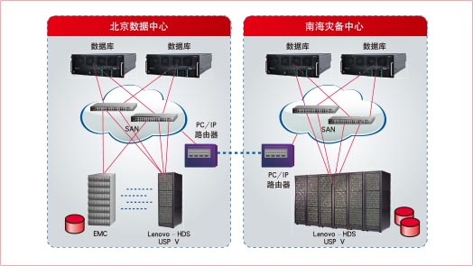

联想解决方案
联想根据客户需求，为客户提供的异构存储虚拟化和灾备方案包括三部分：
- 北京数据中心的异构存储虚拟化方案
- 南海灾备中心的磁盘阵列存储方案
- 北京-南海异构存储灾备技术方案
- 北京数据中心的异构存储虚拟化方案，通过配置LENOVO-HDS USP V虚拟化存储整合现有EMC盘阵，构成统一存储池供总局“增值税专用发票稽核系统”数据库直接使用。LENOVO-HDS USP V的加入，并不更改原存储在EMC磁盘设备上数据的实际存储位置，因而不会产生数据迁移、不影响业务系统的正常访问操作。LENOVO-HDS USP V存储同时提供了全面的虚拟存储解决方案，使异构存储系统互联互通成为可能。
- 南海灾备中心的磁盘阵列存储方案采用和北京数据中心相同的LENOVO-HDS USP V虚拟化存储。LENOVO-HDS USP V 存储设备最大内置磁盘为1152块，最大整合能力可达247PB磁盘可用容量，非常适合作为灾备存储使用。
- 北京-南海异构存储灾备技术方案是在北京和南海的两台LENOVO-HDS USP V之间，通过LENOVO-HDS USP V Disaster Recovery Bundle软件实现异地异步灾备。这种异构灾备设计技术巧妙的用“同构存储灾备技术”化解“异构存储灾备”的难题，同时大幅提高整体系统的稳定性和可靠性，确保“增值税专用发票稽核系统”的性能，降低对业务系统的影响。
方案特点
-
先进性
采用当今世界最主流的存储技术和系统架构，在系统性能指标上具有适合国家税务总局未来5年的技术需求的性能指标 (如IOPS)，同时具 备强大的系统扩展能力，适应应用系统未来存储扩容的需求。
-
高可用性
存储系统可保证100%数据可用性，整个系统采用全冗余的结构设计和RAID保护，保证系统高可靠性和实现7×24×365天不停机运行要求。
-
安全性
可保障存储数据的安全性，在任何情况下都不能通过非法外部通道泄漏。
-
业务服务水平(SLA)保障
核心应用保障其服务水平(SLA)和运行质量，确保系统资源的优先分配。
-
开放和统一管理
存储系统将可以容纳多个厂家异构存储系统连接到一个统一的SAN中，并实现统一集中的管理，摆脱对单厂商的依赖。
-
利旧与投资保护
充分考虑到对原有设备投资加以利用与保护，同时还考虑到对新建系统的投资保护。最大程度保证用户TCO的最小化。
客户收益
本项目中，联想采用了业界先进的、有大量应用案例的异构存储灾备技术，为国税成功建立了总局机关的“增值税专用发票稽核系统”的异地灾备系统，实现了“增值税专用发票稽核系统”数据在数据中心(南海)的安全备份。既为国税在全国范围推广税务数据容灾备份提供的技术和经验积累，也为原有存储设备投资的保护和利旧以及未来金税三期核心应用系统建设中引入异构生产存储产品树立了样板。